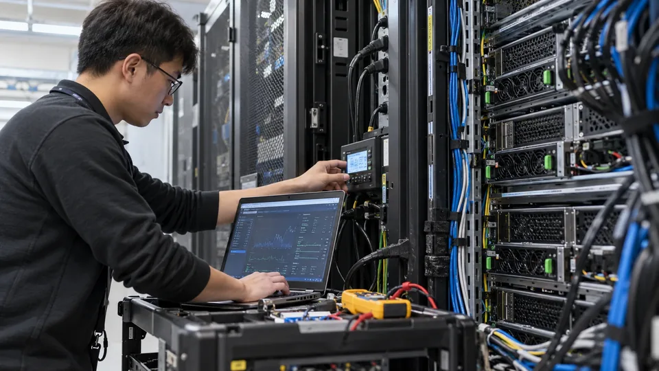

AI Inference: The Cost Behind Every Completed Task
Token prices are only one part of an AI service's costs. Retries, review time and hardware utilization determine what a completed task costs.

An AI service incurs costs each time it processes a request, but a request is not necessarily a completed piece of work. A failed answer, a retry and a corrected result can all consume computing resources. The economic unit that matters to a business is often an accepted task, with an identifiable quality standard and delivery time.
That distinction can reverse a comparison between apparently cheap and expensive systems. A low token price is useful information about one input. It does not establish the cost of resolving a customer inquiry, extracting a correct invoice or producing a report someone can rely on.
Define the task before comparing the price
A task definition needs a starting input, an acceptable result and rules for escalation. For invoice extraction, that might mean correctly identifying specified fields and handing uncertain cases to a person. Counting every generated response as success would conceal the work needed to produce the accepted record.
Consider a hypothetical monthly workload of 10,000 documents. Each initial request consumes 2,000 input tokens and 500 output tokens. At illustrative rates of $1 per million input tokens and $4 per million output tokens, each attempt costs $0.004, giving a $40 initial model bill. These are invented prices for arithmetic, not current vendor quotations.
If 20% of documents need one identical retry, another 2,000 attempts cost $8. The model total becomes $48. If 1,000 documents still need two minutes of human correction at an assumed $30 an hour, correction adds $1,000. The accepted workload costs at least $1,048, or about $0.105 per document, before other expenses.
Quality can dominate a small model-price difference
Suppose a second hypothetical system doubles the cost per attempt to $0.008 but reduces retries to 10% and corrections to 200 documents. Model spending becomes $88 for 11,000 attempts. Corrections cost $200 under the same two-minute assumption, producing $288 total, or $0.0288 per accepted document.
The second system is more expensive per attempt and substantially cheaper per finished document in that example. The comparison depends on measured error and retry rates, not a general rule that larger or more expensive models are better. A more capable system could also be slower, unnecessary for the task or no more accurate on the relevant inputs.
The quality threshold should remain fixed across alternatives. Accepting more errors to improve a cost figure changes the product being measured. Separate workflow productivity from the model's raw generation cost so those trade-offs remain visible.
Hosting costs depend on useful utilization
A self-hosted system adds hardware or rental charges, power, networking, operations and spare capacity. Fixed costs continue when demand is low. Keeping capacity available for peak traffic can therefore raise the average cost of work completed over the whole month.
Imagine a hypothetical serving setup costing $12,000 monthly before variable expenses. At 1 million accepted tasks, fixed cost is $0.012 each. At 100,000 tasks, it is $0.12 each. A tenfold volume difference changes the allocated fixed cost tenfold even when the hardware and nominal token speed are identical.
High utilization is not sufficient if it produces unacceptable queues. MLCommons distinguishes throughput-oriented and latency-constrained benchmark scenarios. A system that processes a large overnight batch efficiently may deliver poor response times when interactive requests arrive unpredictably. The relevant capacity is throughput that still meets the application's quality and latency requirements.
Longer context and repeated work change the workload
Input length, output length and reuse of prior context affect computing requirements. NVIDIA's documentation describes memory needed for model execution and attention caches. These constraints help explain why a benchmark with short requests cannot automatically predict the cost of long-document analysis with many simultaneous users.
Caching can reduce repeated computation, but savings depend on suitable reuse and implementation. A workload of unique documents can behave differently from one sharing a common prefix. An estimated cache benefit should be tested against the actual request mix rather than assumed from the availability of a feature.
Tool calls, retrieval, storage and monitoring add further costs. An agent that generates several intermediate steps can consume more resources than a single response. A per-user subscription or token charge can obscure those differences when the business compares products serving unlike tasks.
Separate unit cost from commercial margin
For a hypothetical accepted task sold at $0.20 with $0.12 of directly attributable cost, the contribution is $0.08, or 40% of revenue. That is not net profit if product development, sales, support and other overhead remain unpaid. Gross margin definitions also depend on accounting classifications and should be read in the company's disclosures.
A credible assessment reports accepted volume, error rates, retries, human effort, latency and the cost boundary. Read those measures alongside system capacity constraints. Improving one component is valuable when it reduces the cost of delivering the required outcome, not merely when it produces a lower price per token.
The report on Amazon’s TorchNeuron and Trainium software examines how easier hardware migration changes the cost of evaluating an alternative AI platform.
Sources and methodology (3)
Primary references for the definitions, methods and risks discussed above. Examples labeled hypothetical or illustrative are not current market quotations.
TTN analysis for informational purposes. This article is not investment, tax or legal advice.